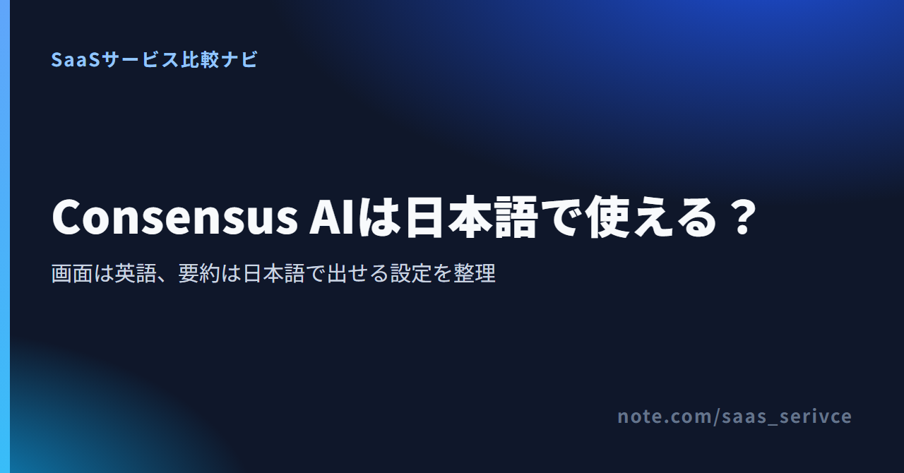
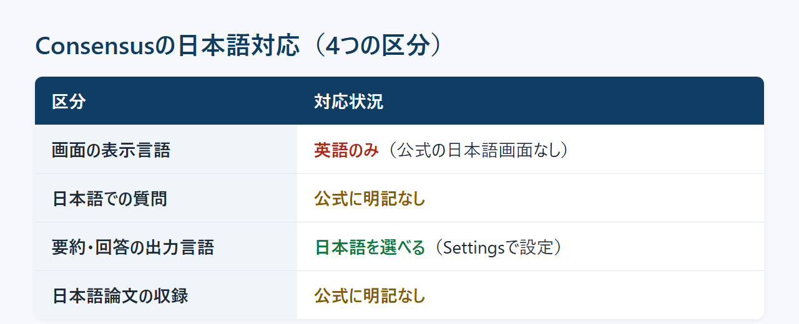
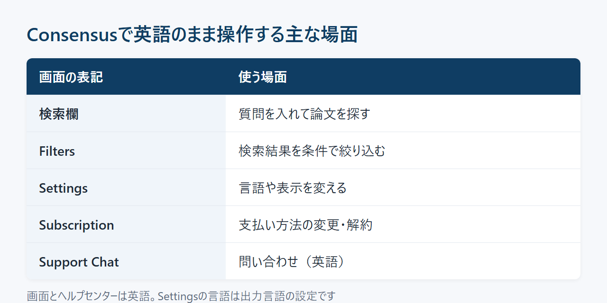
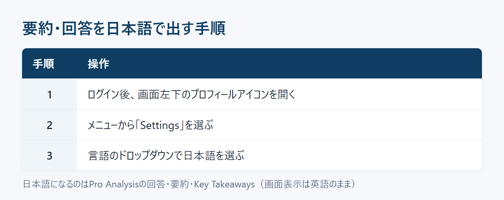
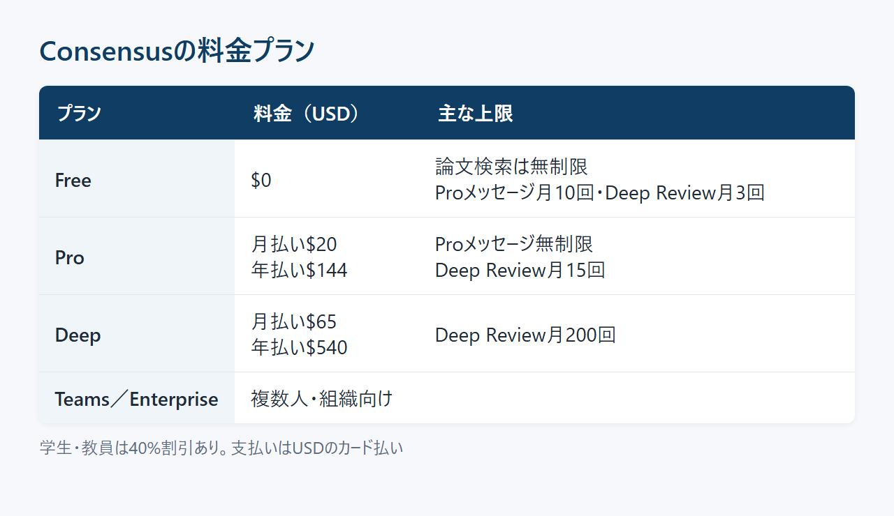

英語論文を探すのにConsensusが便利だと聞いても、英語が得意でなければ「日本語で使えるのか」が最初に気になります。ところが、調べてみると「英語のみ」と書く記事と「日本語で検索・表示できる」と書く記事があり、どちらを信じればよいのか迷うところです。
答えは、どこを「日本語対応」と呼ぶかで変わります。この記事では画面・質問・要約・収録論文の4つに分けて現状を整理し、英語の画面のまま日本語の要約で使うか、ほかの論文検索AIにするかを決められるようにします。
Consensusには公式の日本語画面がなく、操作画面とヘルプは英語です。一方で、設定の言語を日本語にすると、Pro Analysisの回答・要約・Key Takeawaysを日本語で受け取れます。
「日本語で使えるか」は、次の4つに分けると判断がぶれません。

ネット上で結論が割れているのは、この区分が混ざっているためです。画面は英語のままでも出力は日本語にできるので、どちらを見たかで「英語のみ」にも「日本語対応」にもなります。ChatGPT上で動くConsensusのGPTとconsensus.app本体を同じものとして扱っている記事もあり、数年前の情報のまま更新されていない記事も上位に残っています。
ChatGPTのGPTとして使うConsensusは、consensus.appとは入口が別のサービスです。この記事では、consensus.app本体の日本語対応を扱います。
Consensusが合うのは、英語論文を探したいけれど要点は日本語で読みたい人です。メニューや設定が英語でも、決まった操作を覚えれば困らないという人なら十分に使えます。
反対に、画面の表記まで日本語でないと操作できない人には向きません。また、日本語の論文がどこまで出てくるかは分からないため、日本語論文が中心なら国内の論文データベースを主にして、Consensusは英語論文を探す補助に回すのが現実的です。
アカウントは無料プランから作れます。
公式の日本語UIや、表示言語を切り替える機能は確認できません。ブラウザを日本語設定にしても未ログインの画面は英語で表示され、設定画面の言語メニューは出力言語を選ぶためのものです。

consensus.appの画面は英語で、公式のヘルプセンターも英語の記事だけです。ヘルプセンターで「japanese」と検索しても、該当する記事は出てきません。
英語のまま操作する主な場面は次のとおりです。
Settingsには言語を選ぶドロップダウンがあり、日本語も選べます。ただし公式ヘルプでは、これをPro Analysisの回答や要約の言語を変える機能として説明しており、画面の表示言語が切り替わるとは書かれていません。
「設定で日本語にできる」と紹介されているのは、多くの場合この出力言語の設定です。メニューやボタンが日本語になるものではないと理解しておくと、登録後に戸惑わずに済みます。
ChromeやEdgeの翻訳機能を使えば、英語のメニューを日本語に置き換えて読めます。ただ、これはブラウザ側の機能で、Consensusが提供する日本語画面ではありません。
もう一つ困るのは、メニュー名まで訳されると、英語で書かれた公式ヘルプの手順と画面の表記が一致しなくなることです。ヘルプを見ながら操作するときは、翻訳を切って英語の表記のまま照らし合わせてください。
プロフィールからSettingsを開き、言語のドロップダウンで日本語を選ぶと、Pro Analysisの回答・要約・Key Takeawaysが日本語で出力されます。なお、無料プランのProメッセージは月10回までです。
設定は3ステップで終わります。

一度選べば、以後の回答は日本語で返ってきます。英語の要約と見比べたくなったときは、同じ場所で英語に戻せます。
公式ヘルプで出力言語の対象として挙げられているのは、次の3つです。
一方、論文のタイトルや抄録、引用元の本文は、対象として公式に書かれていません。検索結果には英語の論文がそのまま並ぶため、原文の英語を読む場面は残ると考えておいてください。
無料プランでも論文検索は回数無制限で使えます。ただしProメッセージは無料プランだと月10回までで、Proプランにすると無制限になります。
出力言語を日本語にしたら、無料プランのまま自分の研究テーマで1か月使ってみてください。月10回のProメッセージで足りるなら無料のまま続け、途中で使い切るようならProを検討する、という順番で判断できます。
日本語での質問（検索語）にどこまで対応するか、日本語論文がどこまで収録されているかは、どちらも公式に明記されていません。英語論文を探す道具と考えて英語の検索語も用意し、日本語文献はCiNii ResearchやJ-STAGEで補うのが確実です。
国内の販売代理店や個人ブログには「日本語で検索できる」という記述もあります。ただ、Consensusの公式ヘルプには日本語の質問に関する説明がありません。日本語で入れた質問が英語論文とどう照合されるかは、外からは判断できません。
確実に英語論文を拾うには、次の順で検索語を作ると迷いません。
日本語の論文や国内の学会誌を探したいなら、国内の論文データベースを併用します。CiNii Researchは国立情報学研究所が運営する論文・研究データの検索サービスで、J-STAGEは国内の学会誌などを公開する電子ジャーナルのプラットフォームです。
海外の研究動向はConsensus、国内の先行研究はCiNii ResearchとJ-STAGE、と役割を分けると、探し漏れを減らせます。
日本語の要約は、英語論文の内容をAIがまとめ直したものです。レポートや臨床の判断に使う前に、少なくとも次の3点は原論文で確かめてください。
とくに数値や効果の大きさは、日本語にまとめる過程でニュアンスが変わることがあります。引用する箇所は、必ず英語の原文に戻って読みましょう。
問い合わせ窓口はアプリ内のSupport Chatとメールで、ヘルプセンターも英語です。支払いはUSDのカード払いで、解約はSettingsのSubscriptionから止められます。
公式の問い合わせ先は次の2つです。
確認できた範囲では、日本語でのサポートの案内はありません。問い合わせは英語で書く前提で準備しておくと安心です。
請求はUSD建てで、支払いはクレジットカードです。カードの登録や変更は、Settings→Subscription→Manage→Manage payment methodの順に進み、請求先住所もカード情報と一緒に更新します。
対応するカードブランドや、JCB・日本で発行したカードが使えるかは、公式に記載がありません。登録時に決済が通るかを確かめてください。
請求書まわりでは、返金を申請するときにinvoiceまたはreceiptの番号を使うと案内されています。一般プランで請求書をダウンロードできるかは確認できませんでした。海外サービスの消費税の扱い（リバースチャージなど）は事業の状況で変わるため、経費として処理するなら税理士に確認してください。
解約はSettingsのSubscriptionから手続きします。解約しても、支払い済みの請求期間の終わりまでは有料機能を使え、その後は無料プランに切り替わります。解約の手続き画面では一時停止も選べて、あとから再開できます。学期の合間など使わない期間があるなら、一時停止も選択肢になります。
返金を申請できる期限は、支払い方法によって違います。
年払いは一度に$144以上を払うのに、返金を申請できるのは購入後5日以内に限られます。まず月払いか無料プランで使い勝手を確かめてから、年払いに切り替えるのが安全です。
無料プランでも論文検索は無制限で、Proメッセージは月10回まで使えます。回数が足りなくなったらPro、Deep Reviewを多く使うならDeepを検討します。学生・教員には40%の割引があります。

無料プランで使える範囲は次のとおりです。
有料プランは主に2つです。
1ドル=157円換算（執筆時点の目安。為替で変動）で、Proの年払いは約22,608円、Deepの年払いは約84,780円です。Proメッセージを月10回より多く使うならPro、文献レビューを何本も並行して進めるならDeepという分け方になります。複数人で使うTeamsや、組織向けのEnterpriseも用意されています。
学生と教員は40%の割引を受けられます。臨床医向けの25%割引もありますが、認証に米国の医療者番号（NPI）を使うため、日本の医師や看護師などは対象になりません。
学生・教員の申請の流れは次のとおりです。
日本の大学のメールアドレス（.ac.jp）で認証が通るかは、公式に書かれていません。有料プランに切り替える前に「Claim」で試し、通らなければ在籍証明を送る方法に切り替えてください。
料金ページでは、ProとDeepの金額を月払いと年払いで切り替えて見比べられます。
日本語の出力を設定できるのはNouswiseで、集めたPDFや資料を日本語でまとめたい人の候補になります。Elicitは日本語の出力を確認できないため、日本語対応の代わりではなく、論文の探し方をConsensusと比べたい人向けです。どちらも公式の日本語画面は確認できません。
ElicitはConsensusと同じく、公開されている論文をAIで探すツールです。無料のBasicプランでも、論文検索、要約、全文を読める論文とのチャット、回答の根拠になった箇所の表示、Zoteroへの取り込みまで使えます。
Consensusと同じ質問を入れ、候補に挙がる論文や、回答から根拠へたどる操作の違いを比べる使い方が向いています。有料プランのPro・Scaleは、ユーザー単位の課金です。
Elicitの日本語対応については、公式の案内を確認できていません。英語で操作する前提で、Basicプランから比べてみてください。
Nouswiseは、論文を探すよりも、手元に集めたPDFや資料を読み解くためのAIリサーチツールです。無料のStarterプランでもプロジェクトは無制限に作れ、資料（Sources）は100件、ファイルは1つ100MBまで扱えます。
設定の出力言語で日本語を選べる点はConsensusと共通です。画面の表示言語や、日本語での問い合わせに対応しているかは確認できません。Consensusで見つけた論文をNouswiseに集め、日本語でまとめ直すという組み合わせも考えられます。
有料プランの最安はEssentialの月$19.99で、Sourcesが300件に増えます。年払いにすると17%割引です。まずは無料のStarterで、手持ちの資料を日本語で要約できるかを確かめてみてください。
Consensusは、英語の画面のまま出力言語を日本語にして、英語論文を探す使い方に向いています。日本語論文を中心に探すならCiNii ResearchやJ-STAGEと併用し、合わなければほかの論文検索AIを比べてください。
登録する前に、次の5点を押さえておきましょう。
この5点を受け入れられるなら、Consensusは英語論文の要点を日本語でつかむ道具として十分に役立ちます。
アカウントを作ったら、最初にSettingsの言語を日本語へ変えてください。